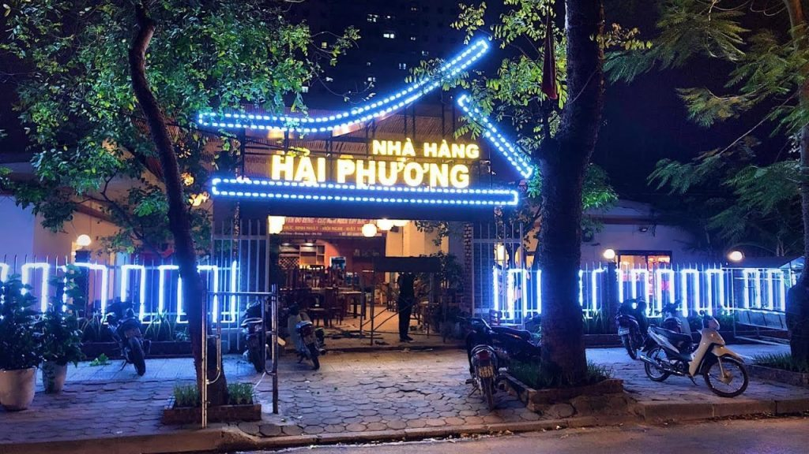
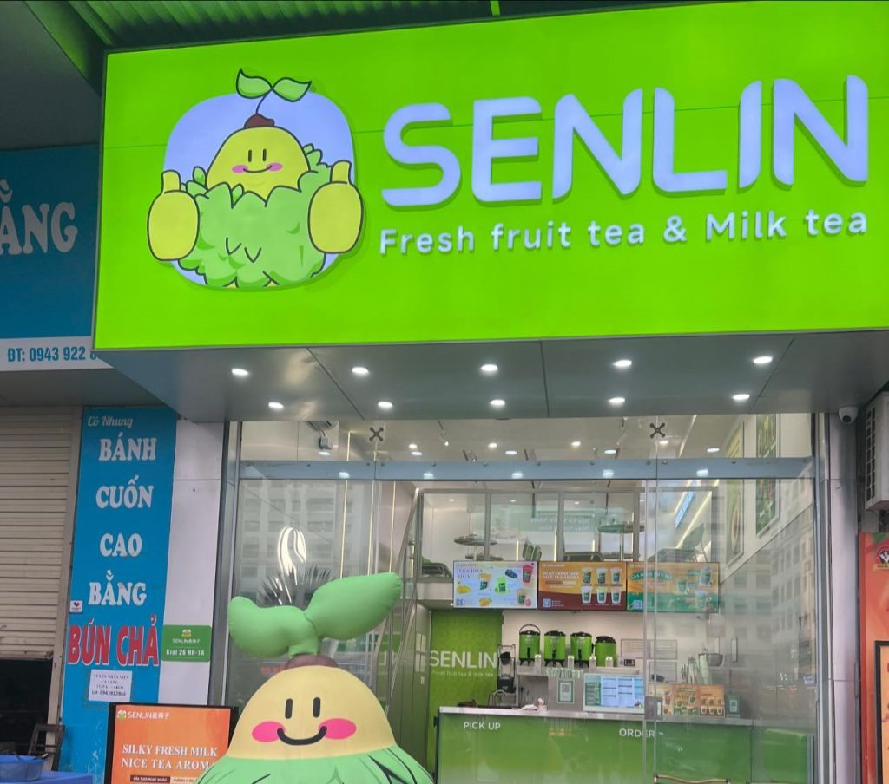
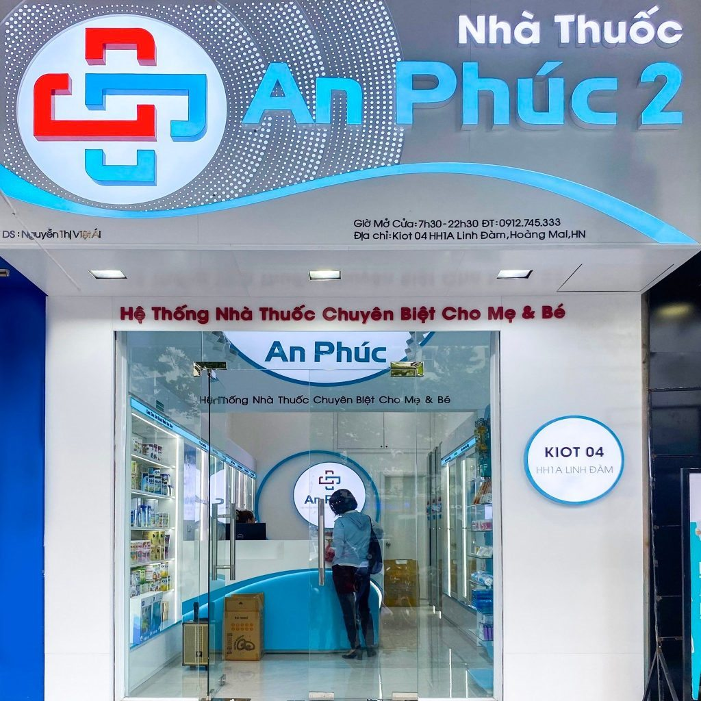
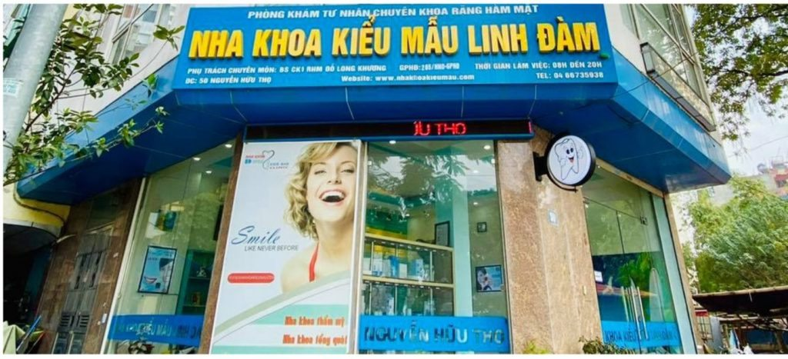

Nhu cầu làm biển quanh Linh Đàm, Hoàng Mai
Khu vực Linh Đàm, Hoàng Mai, Hà Nội có nhiều cửa hàng mặt phố, văn phòng, quán ăn uống, cafe, nhà thuốc, phòng khám và dịch vụ bán lẻ. Khi làm biển, cần ưu tiên khả năng nhìn từ xa, độ sáng buổi tối và bố cục đủ rõ để khách đi ngang nhận ra nhanh.
- Biển mặt tiền cho cafe, trà sữa, đồ uống take away, nhà hàng và quán ăn.
- Biển nhà thuốc, phòng khám, nha khoa cần sáng rõ, sạch và tạo cảm giác tin cậy.
- Biển shop thời trang, cửa hàng bán lẻ cần tên thương hiệu dễ đọc và nổi bật khi khách đi ngang.
- Sửa biển cũ: thay LED, thay mặt mica/bạt, đổi nội dung, gia cố khung hoặc làm mới khi biển đã xuống cấp.
Khu vực phục vụ
Nhận tư vấn và báo giá theo ảnh mặt tiền quanh các tuyến/khu vực sau:
- Linh Đàm
- Bán đảo Linh Đàm
- Nguyễn Hữu Thọ
- Giải Phóng
- Kim Đồng
- Định Công
- Tân Mai
- Khu đô thị Linh Đàm
- Hoàng Liệt
- Đại Kim
Mẫu biển tham khảo theo ngành
Các ảnh dưới đây dùng để tham khảo kiểu mặt tiền, ánh sáng và bố cục. Khi báo giá thực tế cần chốt kích thước, vật liệu, vị trí lắp và điều kiện thi công.





Liên kết dịch vụ liên quan
Câu hỏi thường gặp
Có nhận làm biển quảng cáo tại Linh Đàm không?
Có. Bông Sen Trắng nhận tư vấn, sản xuất, lắp đặt và sửa biển quảng cáo quanh Linh Đàm, Hoàng Mai và các khu vực lân cận tại Hà Nội.
Linh Đàm nên làm loại biển nào cho cửa hàng?
Tùy mặt tiền và ngành hàng. Cafe, đồ uống thường hợp hộp đèn, chữ nổi LED, biển vẫy. Nhà thuốc, phòng khám cần biển sáng đều, chữ rõ. Shop thời trang nên ưu tiên biển đẹp, dễ lên ảnh và đúng màu thương hiệu.
Muốn báo giá biển tại Linh Đàm cần gửi gì?
Cần gửi ảnh mặt tiền, kích thước dự kiến, địa chỉ lắp đặt, nội dung/logo và thời gian cần hoàn thiện. Có ảnh rõ thì tư vấn vật liệu và báo giá sát hơn.
Có sửa biển cũ khu Linh Đàm không?
Có. Có thể thay LED, thay nguồn, thay mặt bạt/mica, đổi nội dung, gia cố khung hoặc làm mới nếu biển đã xuống cấp.